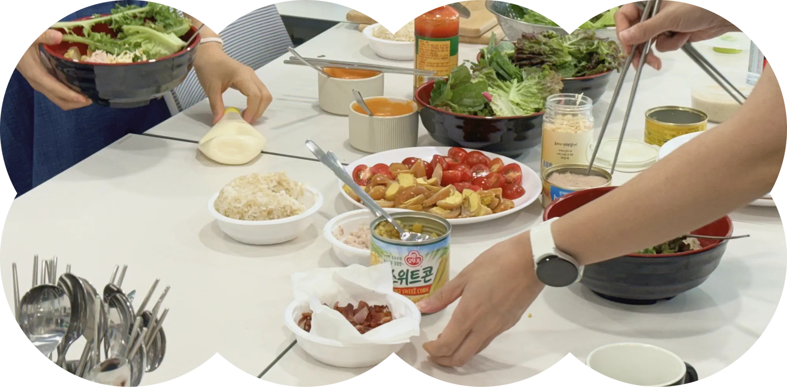
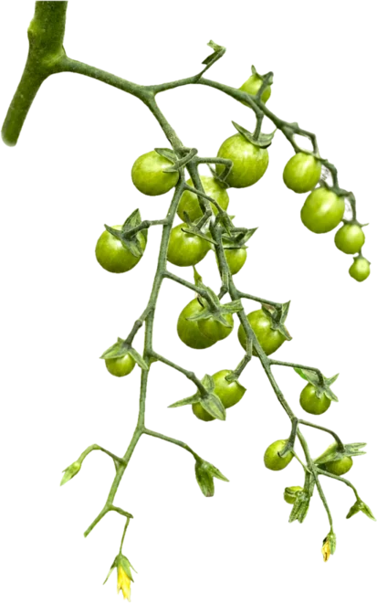
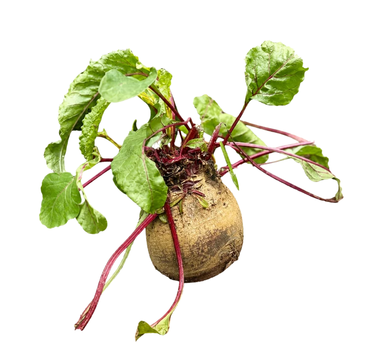
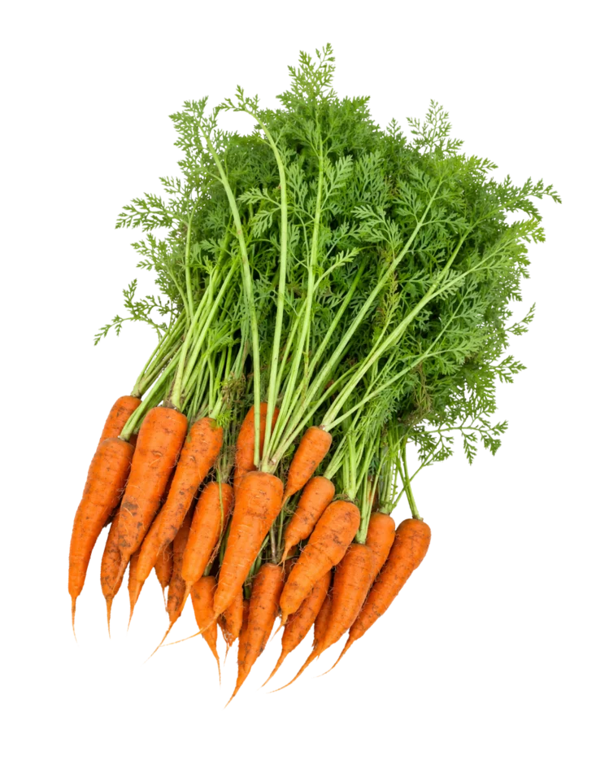
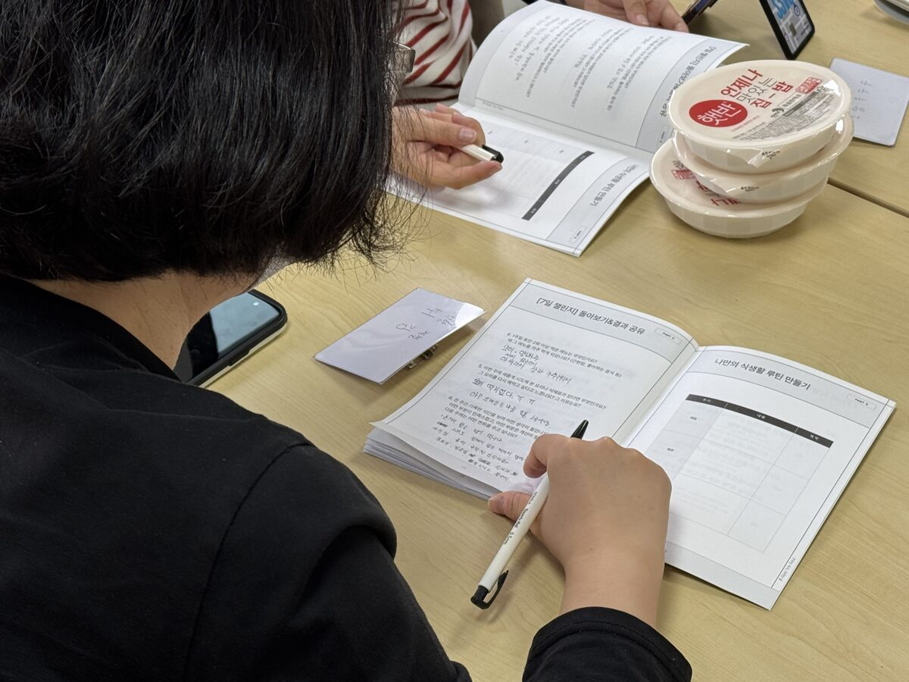
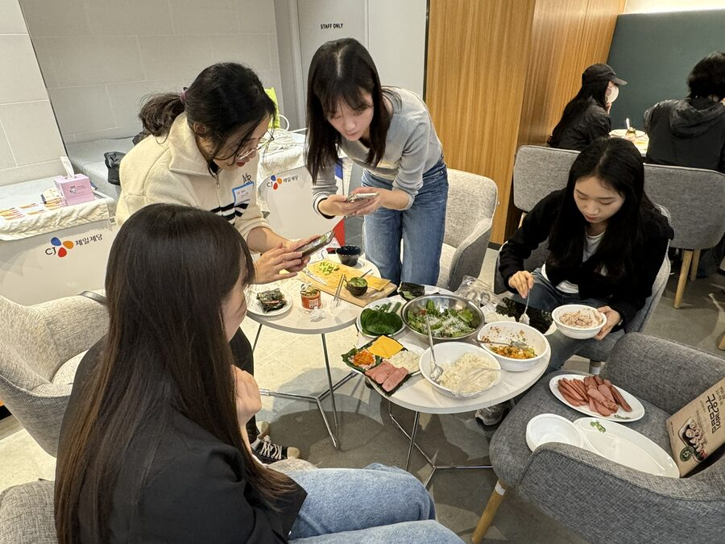
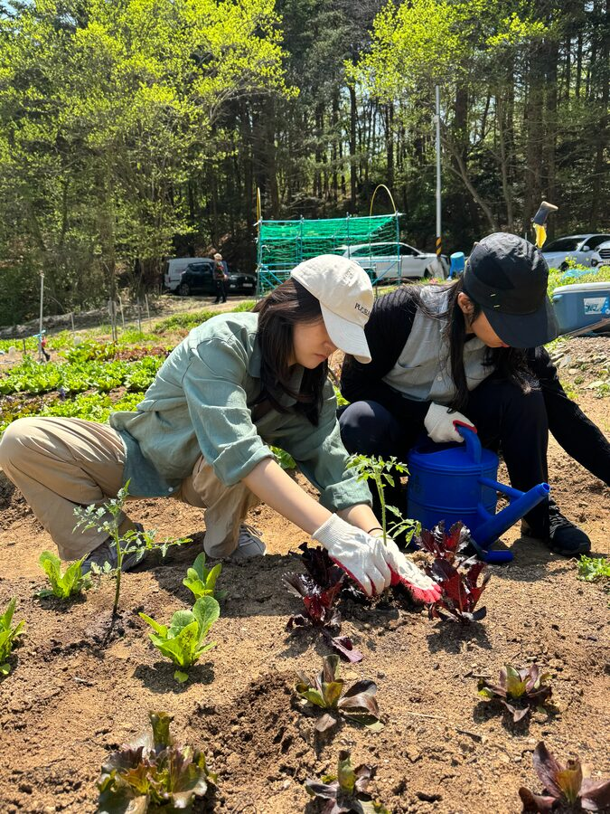
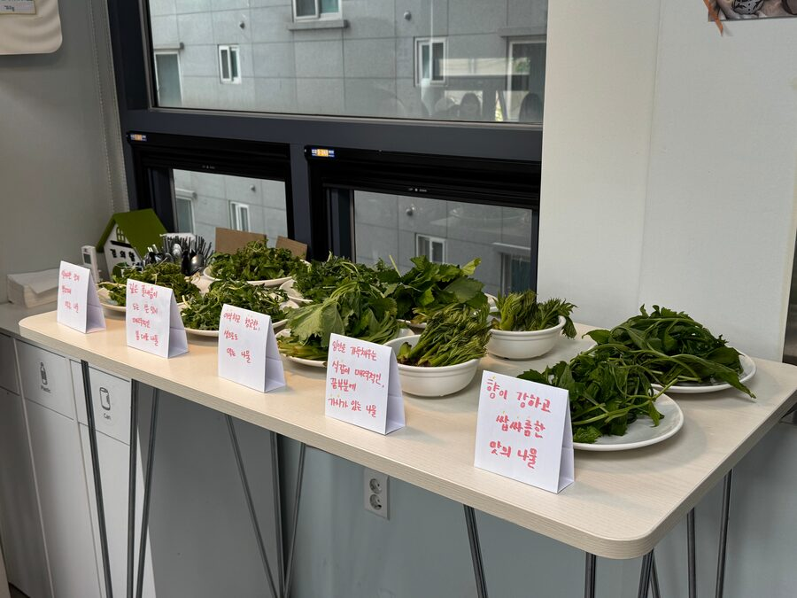
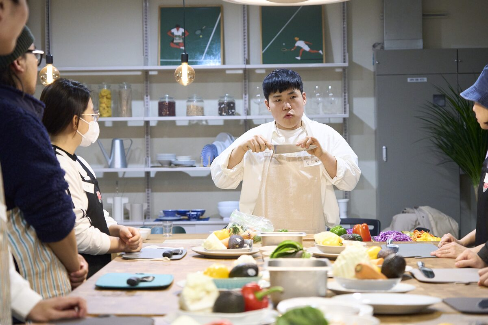

청년들과 함께하는 소셜 다이닝




소셜 다이닝 등 커뮤니티
프로그램 기획/운영
서울/경기도 권역 청년센터와 협업하여
청년들과 함께하는 소셜 다이닝 프로그램을 기획하고 운영합니다.




지역 동아리 기반
커뮤니티 형성
서울청년센터 은평/양천 등 지역을 중심으로
청년들이 모이고, 요리하고, 식사하며
커뮤니티를 만들어가는 활동을 지원합니다.
식문화 관련 다양한 활동 기획
식재료를 탐구하고, 요리하고, 함께 나누는
참여형 식문화 프로그램을 기획하고 운영합니다.
